AUG - OCT 2025
Axon Evidence Bundles
Unifying evidence so investigators can find what matters without leaving their workflow.
My background in computer science shaped how I think — in systems, constraints, and tradeoffs.
Today, I bring that mindset to product design, building solutions that matter beyond the interface.
prev @ axon
Unifying evidence so investigators can find what matters without leaving their workflow.
Reimagining how incident reports and third-party evidence flow from the field into Evidence.com.
A redesign that replaced a manual, sales-focused buying process with a self-serve e-commerce experience built for discovery, engagement, and conversion.
A digital memory frame maker for creating and sharing frames with the people you care about.
I began in computer science, but found my way to product design through a growing interest in how technology is shaped around people. I'm especially drawn to solving problems for users whose experiences I may not naturally share.
Today, I bring that mindset to product design, building solutions that matter beyond the interface.
Previously, I designed across unfamiliar domains — from e-commerce in the HVAC space to public safety technology at Axon. In both, I learned to empathize deeply, ask better questions, and build solutions that needed to work in high-stakes, real-world conditions.
View resumeTo view this case study, please enter the password.
Every year, tens of thousands of cellphone extractions and drone missions are used in criminal investigations each producing large, multi-file datasets that investigators must quickly understand under time pressure.
I led end-to-end product and design work on Evidence Bundles, introducing a new data model and review experience that treats complex extractions as a single piece of evidence across Evidence.com and Justice—reducing review time, minimizing tool switching, and surfacing critical context earlier.
Alongside design, I did lightweight "vibe coding" of key components such as AI insights and the overview panel, quickly testing ideas and aligning with engineering.
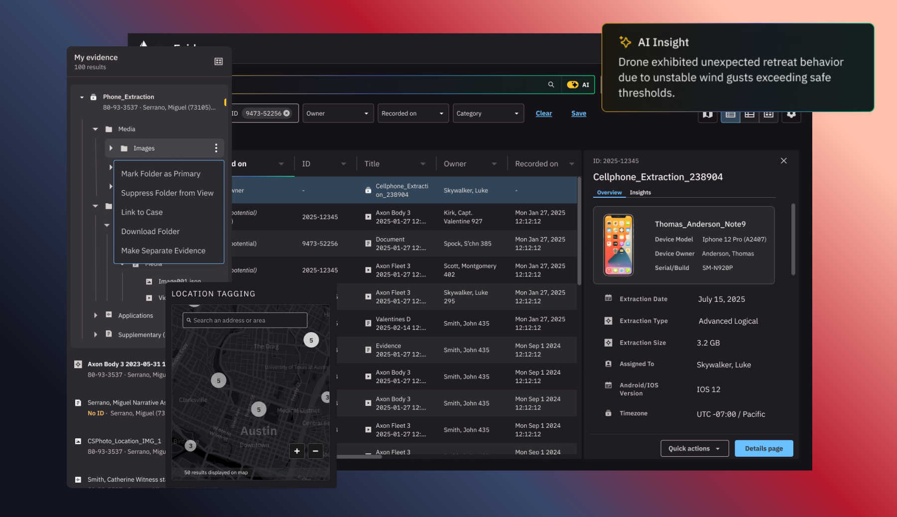
When an extraction arrives, investigators face tens of thousands of files at once. The challenge isn't missing evidence — it's finding what matters
To make sense of an extraction, users jump between Evidence.com, forensic tools like Cellebrite, drone software, and local file systems. Each switch breaks focus, adds friction, and forces users to manually reconstruct context.
Investigations slow down, follow-ups increase, and critical details surface later than they should — not because evidence was missing, but because it wasn't accessible when decisions were being made.
THE CHALLENGE
THE SOLUTION
Evidence Bundles turn large cellphone and drone extractions into a single, organized view that investigators can actually review.
Instead of digging through tens of thousands of files or switching tools, investigators can quickly see what's inside, find what matters, and move forward with their investigation
Add your video as videos/demo_bundles.mp4 (MP4) to show it here.
The evidence detail page now provides a clear, structured entry point into complex extractions. By surfacing key details and grouping related content, investigators can quickly understand the scope of an extraction and orient themselves before beginning review.
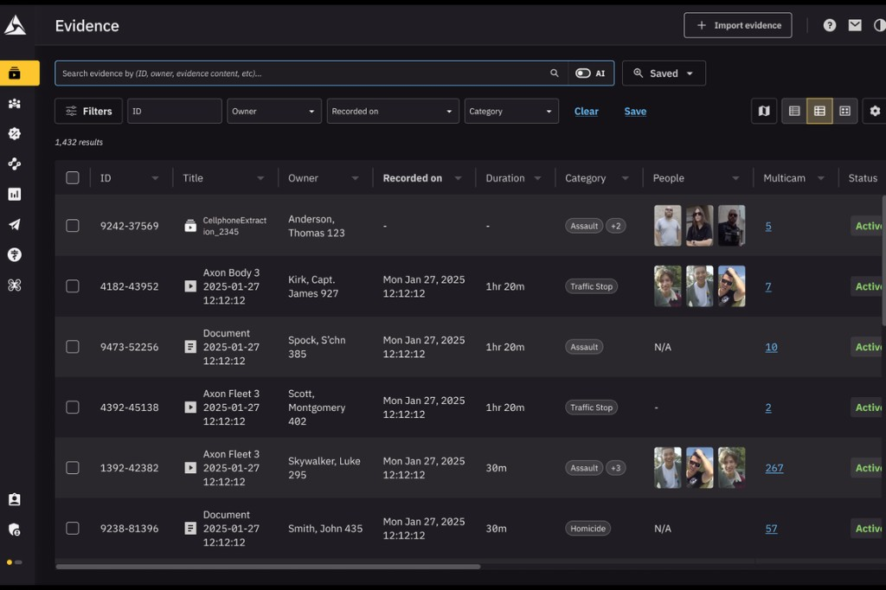
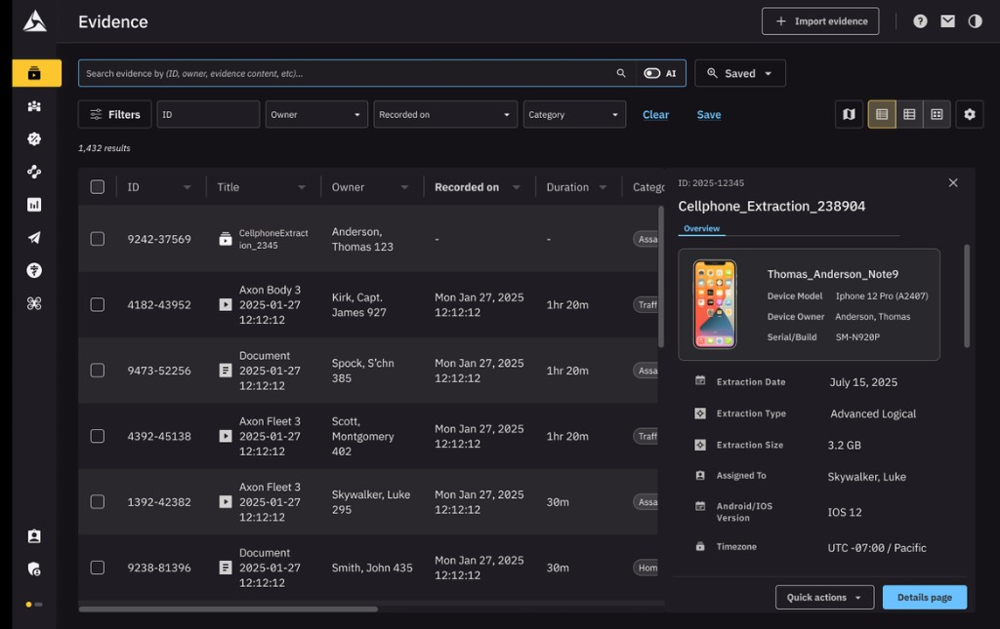
Extractions are now presented as an organized, actionable evidence list rather than a raw file dump. Files are grouped and structured to reflect investigative relevance, with tiered functionality that supports scanning, previewing, and deeper interaction as investigators move through review.
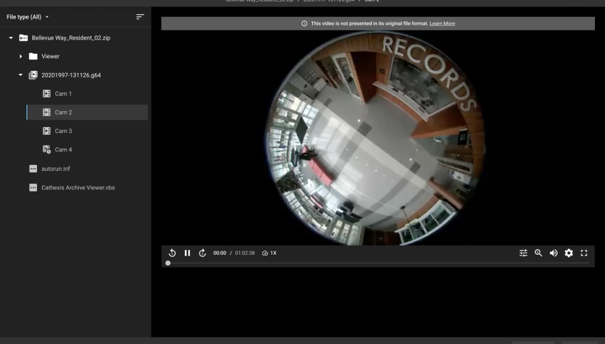
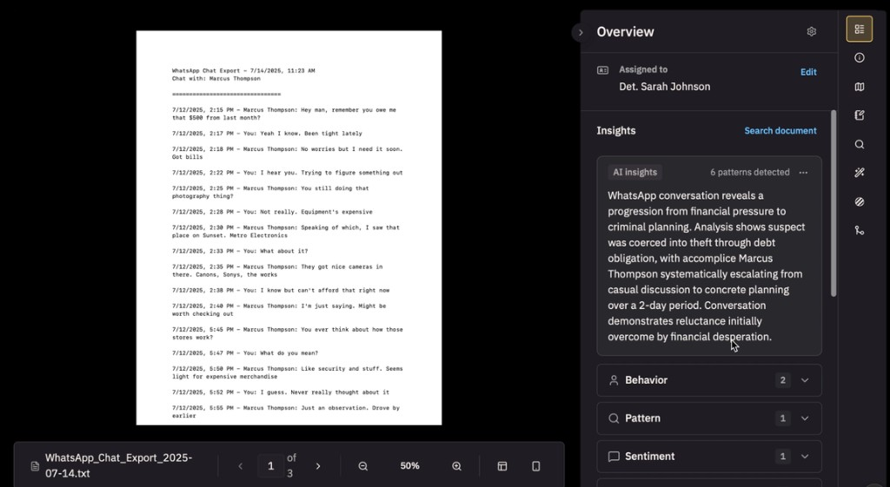
The dashboard introduces a high-level view of an extraction that surfaces patterns, activity, and key attributes at a glance. By summarizing evidence across dimensions like type, time, and location, investigators can quickly prioritize where to focus before moving into detailed file review.
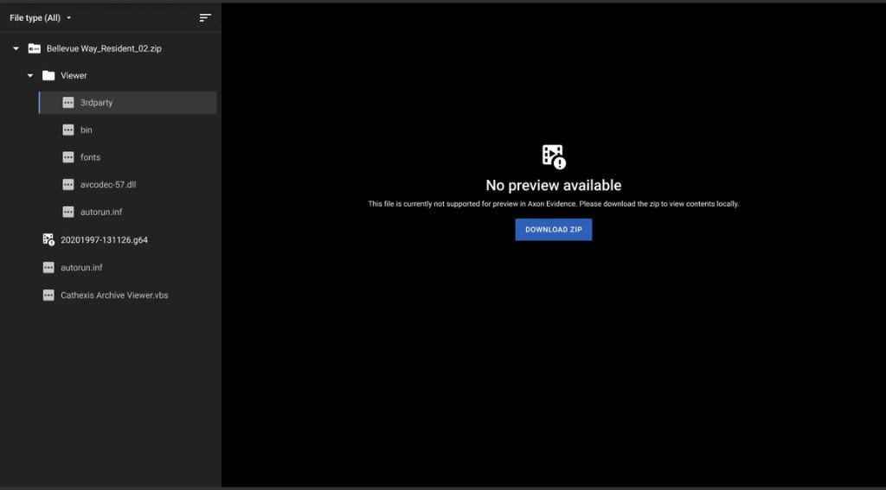
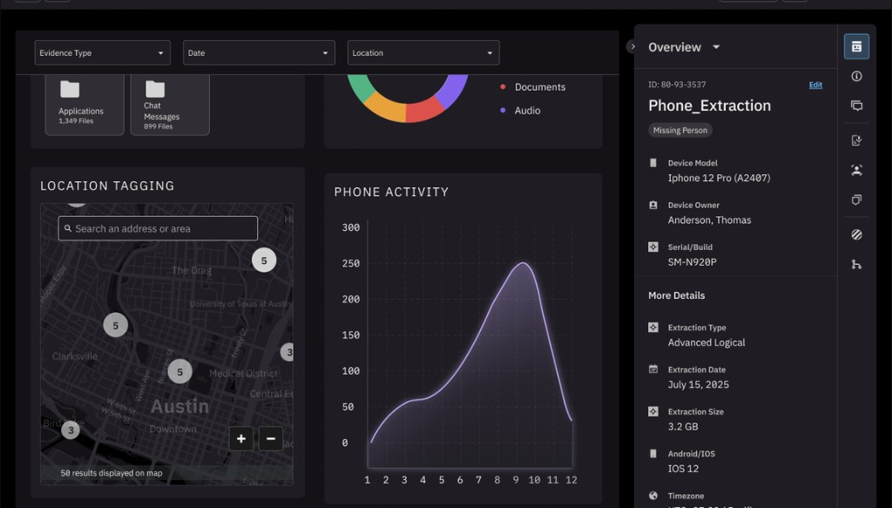
RESEARCH
To understand where review broke down, I conducted qualitative research with investigators and analysts working with cellphone and drone extractions. Sessions focused on how they currently navigate extractions, what they look for first, and where friction slows investigations.
Rather than evaluating tools in isolation, I mapped how evidence is reviewed end-to-end, from when an extraction first arrives to when it's deemed investigation-ready.
Themes
To understand where review broke down, I conducted qualitative research with investigators and analysts working with cellphone and drone extractions. Sessions focused on how they currently navigate extractions, what they look for first, and where friction slows investigations.
When an extraction arrives, users aren't looking for everything — they're trying to understand what they're dealing with. Without an overview, investigators felt dropped into files with no clear starting point.
Extractions often contained tens of thousands of files, but only a small subset mattered early. Treating all files equally slowed review and decision-making.
When key details weren't surfaced, investigators pieced together meaning by switching tools, downloading files, or keeping external notes — adding time and risk.
Inefficiency wasn't caused by a lack of evidence, it came from the effort required to make sense of it. Investigators needed faster ways to understand relevance, context, and next steps without leaving their workflow.
EXPLORATIONS
Based on research findings, I explored multiple ways to reduce cognitive load while preserving access to detailed evidence. The following explorations shaped the final direction.
Feedback
Investigators found expandable lists difficult to scan at scale. Large extractions made it hard to understand structure, and repeatedly expanding folders added cognitive overhead before review could even begin.
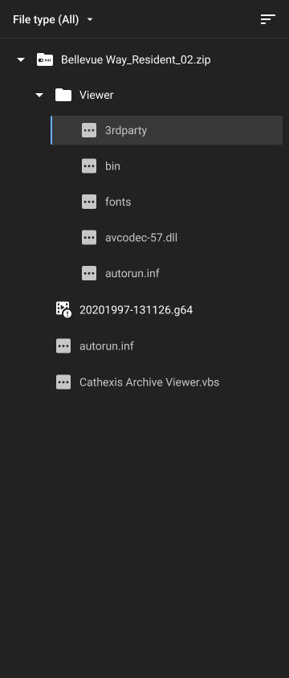
What changed
We introduced a tiered navigation structure that made hierarchy visible at a glance, allowing investigators to understand how evidence was organized without repeated interaction.
Tiered navigation in action.
Feedback
Early designs placed filters within individual dashboard widgets. Investigators found this confusing and repetitive, often needing to apply the same filter multiple times to cross-check evidence.
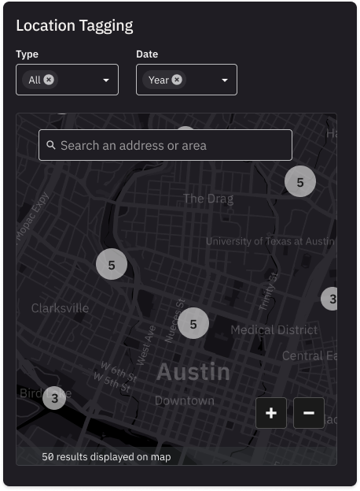
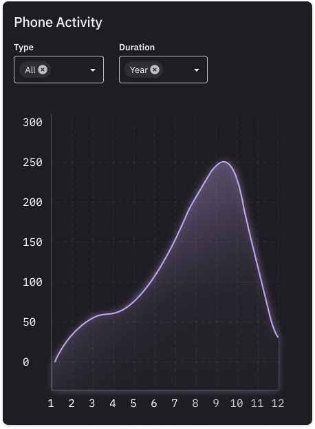
What changed
We moved filtering to a global level across all widgets, allowing investigators to narrow evidence once and see consistent results across the entire dashboard.
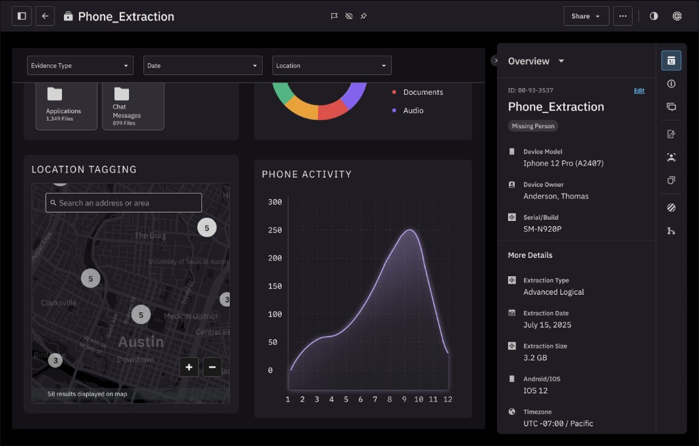
Evidence Bundles improved how investigators review complex extractions by shipping a PO experience centered on the evidence list and overview details panel. While dashboard-level insights were explored, technical constraints scoped the initial release to the most critical features.
By introducing structured bundles, overview context, and in-platform review, investigators could assess relevance and begin analysis significantly earlier, without downloading files or switching tools.
Making extractions reviewable in-platform reduced reliance on external forensic tools and encouraged agencies to store and manage third-party evidence directly within Axon.
The "one evidence, many files" model established a flexible pattern that extends beyond cellphone extractions to other complex evidence types, including drone missions and multi-camera incidents.
Designing Evidence Bundles required balancing investigative rigor with usability in a space where mistakes carry real consequences. One of the biggest challenges was identifying where structure added clarity versus where it introduced unnecessary abstraction.
This work strengthened my approach to designing for complex, high-stakes systems, where progress is often iterative, constrained, and driven as much by feasibility as by user need.
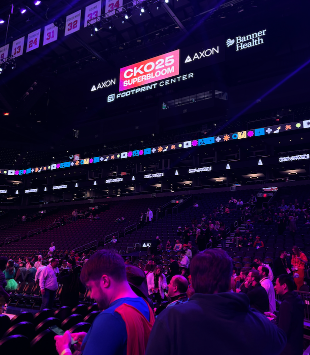
Alignment, finally not on Zoom.
Good teams are built between meetings.
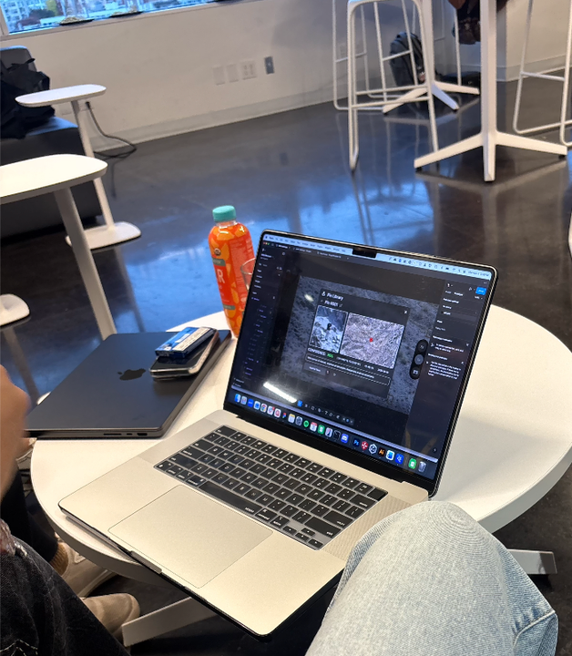
Design critiques: where good ideas get better.
Want to read more?
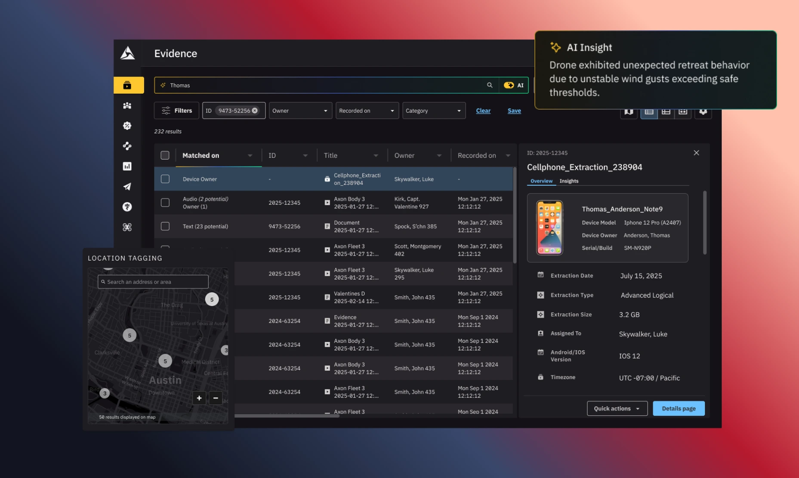
Reimagining how incident reports and third-party evidence flow from the field into Evidence.com.
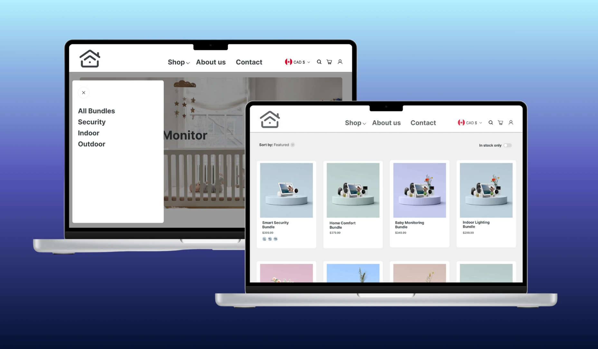
A redesign that replaced a manual, sales-focused buying process with a self-serve e-commerce experience built for discovery, engagement, and conversion.
More than 18,000 law enforcement agencies globally rely on third-party systems to collect non-emergency incident reports, while digital evidence is managed separately. This disconnect creates delays, manual work, and incomplete evidence at the start of investigations.
During my Summer 2023 internship on the Digital Evidence Management System (DEMS) team at Axon, I worked on Incident Report Integration—a project focused on simplifying how third-party evidence is collected and linked to incident reports across multiple regions with varying constraints.
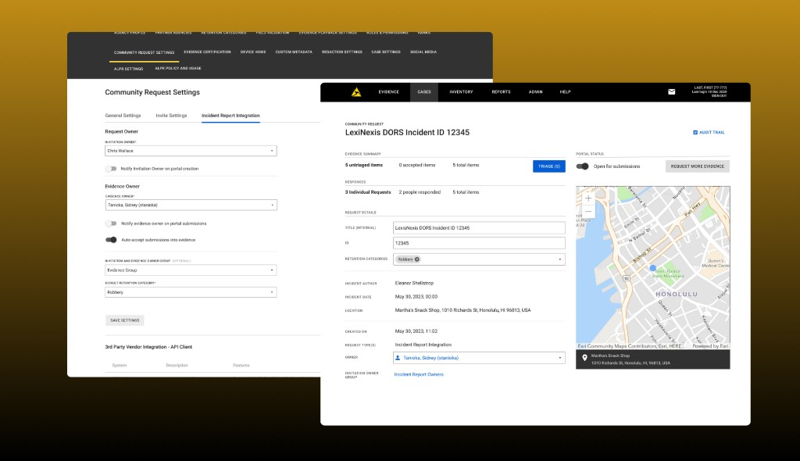
THE CHALLENGE
Incident reports and digital evidence were collected in different tools, forcing officers to manually move files between systems. This extra work caused delays and often meant investigations started without all the necessary information.
The question we tackled: How might we simplify third-party evidence collection while keeping incident reporting workflows intact?
THE SOLUTION
We designed an end-to-end integration that connects third-party incident reporting systems with Axon's digital evidence platform, automatically linking evidence to incident reports through a centralized review experience.
Agencies can see all evidence submitted through third-party reports in one place. Evidence is automatically tied to its incident, making it easy to triage, review, and request follow-ups without switching systems.
Agencies configure permissions and generate an API client in under a minute, enabling secure connections with existing reporting tools.
Evidence submitted alongside incident reports flows directly into Axon, eliminating manual uploads and delays.
Incident Report Integration was designed to deliver value for everyone involved in the evidence lifecycle—from community members submitting reports to investigators acting on them.
Reduce manual work and operational overhead by automating evidence intake and integration with existing reporting systems.
Access complete, investigation-ready evidence earlier—without switching tools or waiting on follow-ups.
Submit all relevant digital evidence in one step, with confidence that it's securely received and reviewed.
Enable a scalable, integration-first platform that strengthens partnerships with third-party reporting vendors and increases platform adoption.
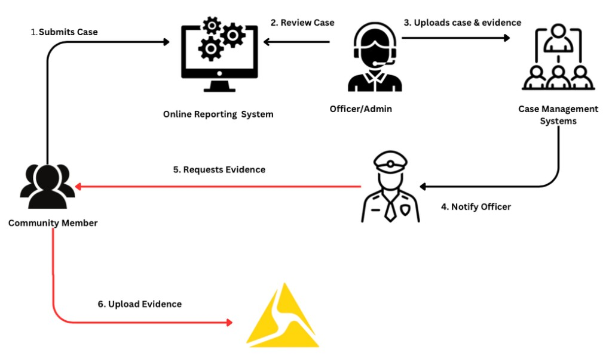
Before: Evidence handled across multiple tools
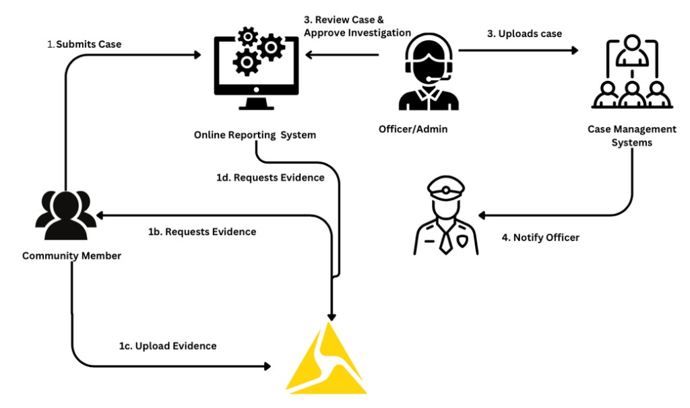
After: Evidence handled in one connected system
To understand where evidence collection was breaking down, we conducted interviews with law enforcement agencies across the US, Canada, Australia, and the UK, including agencies using third-party systems for non-emergency incident reporting. We paired these conversations with a deep analysis of the reporting software agencies relied on day to day.
Rather than redesigning existing tools, our goal was to understand how incident reports and evidence moved through these systems—and where friction, delays, and manual work were introduced.
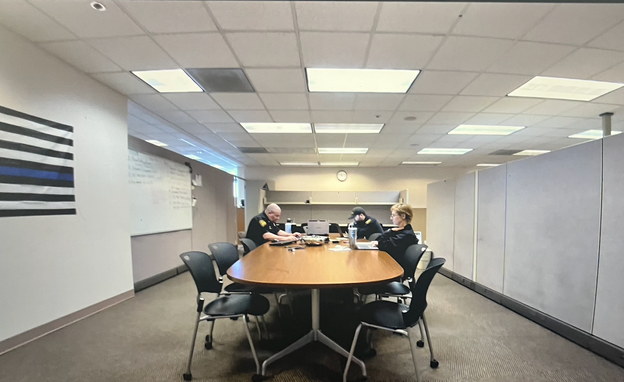
How do agencies collect evidence today?
How does evidence move through existing reporting tools?
What's possible within real-world constraints?
Despite regional differences, every system shared the same underlying issue: incident reports and digital evidence were handled separately. This separation led to delays, manual work, and investigations starting without complete information.
These insights confirmed that the core problem wasn't any single reporting tool—it was the lack of a seamless connection between third-party reporting systems and digital evidence management.
We shared early and iterative designs with partner agencies to gather feedback on clarity, usability, and setup flow. These iterations reduced setup errors, lowered cognitive load for administrators, and helped standardize API experiences across Axon—making integrations easier to adopt and scale.
Feedback
Agencies shared that editing feature access and third-party system details was unnecessary and confusing. Since reporting systems are determined by geography, these settings were rarely changed and added cognitive overhead.
What changed
We simplified the API client details experience by removing low-value configuration options and shifting the view toward a clearer, read-only presentation of essential information.
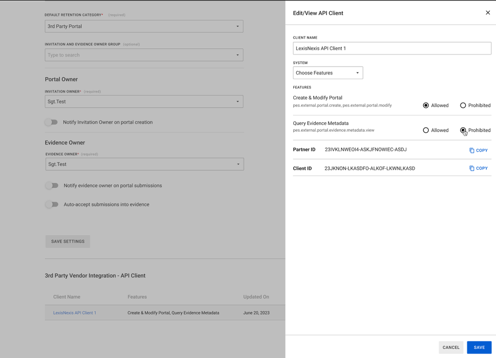
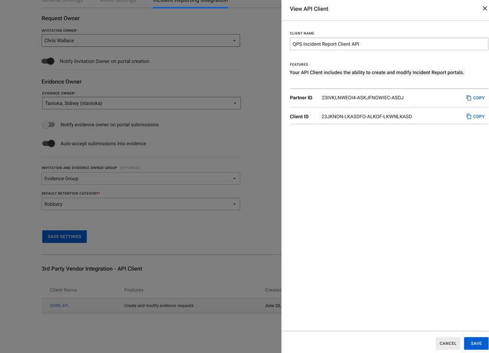
Feedback
Administrators struggled to understand which API credentials needed to be copied during setup, and internal teams noted inconsistencies between the integration flow and existing Air API layouts.
What changed
I redesigned the API creation experience using a dialog-based pattern with clear hierarchy, inline copy actions, and guardrails (such as disabling completion until required values were copied). This pattern was then adopted to replace the existing Air API settings layout, creating a more consistent and scannable experience across the platform.
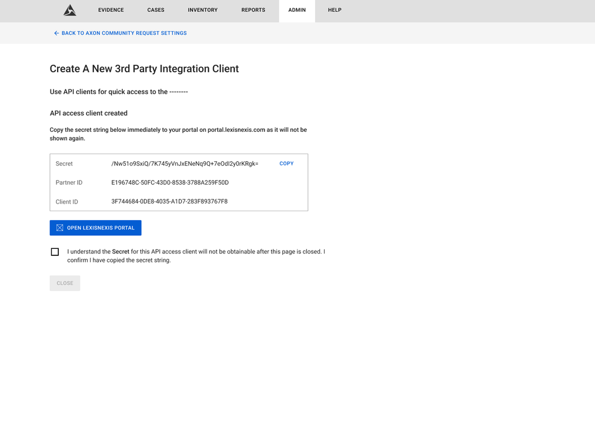
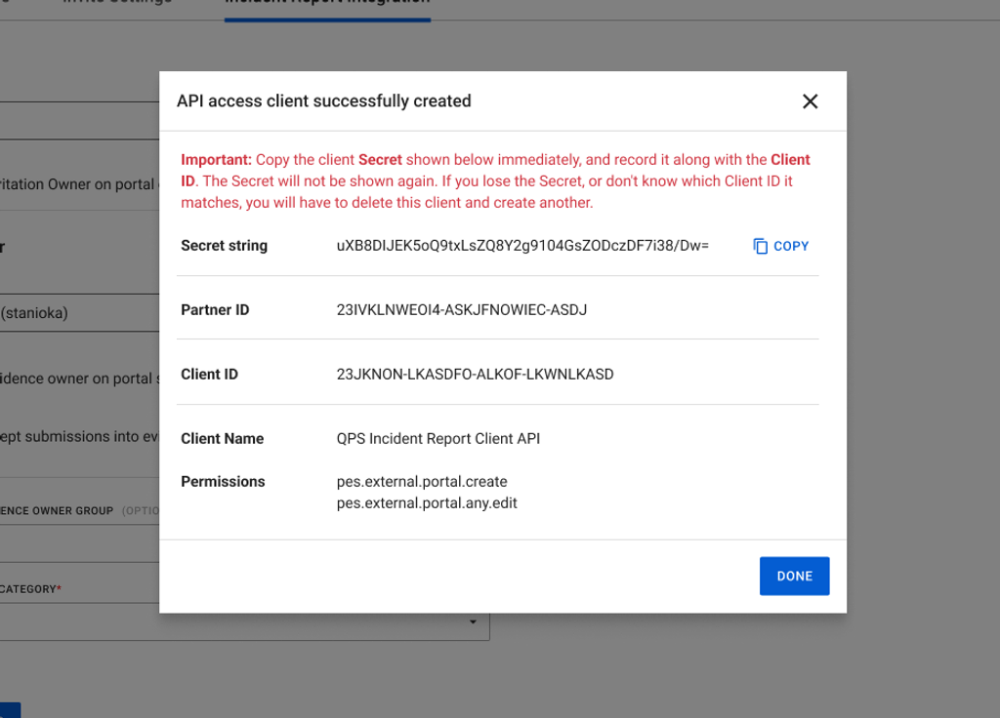
The Incident Report Integration delivered measurable improvements for agencies while strengthening Axon's platform foundations.
By enabling earlier evidence submission and automatic linking, investigators gained faster access to critical information at first contact.
Eliminating manual evidence migration reduced operational workload—equivalent to saving up to five full-time staff roles in some regions.
The dialog-based API experience improved clarity, reduced setup errors, and established a reusable pattern for future integrations.
This project pushed me to OWN IT and design for users and environments I didn't come from. Working across international agencies taught me how much context, constraints, and real-world workflows shape good design—and that simplifying systems and listening closely to feedback often creates the biggest impact.
Seeing early ideas turn into tools agencies could actually use was the most rewarding part, and it reinforced my interest in building thoughtful, real-world systems.
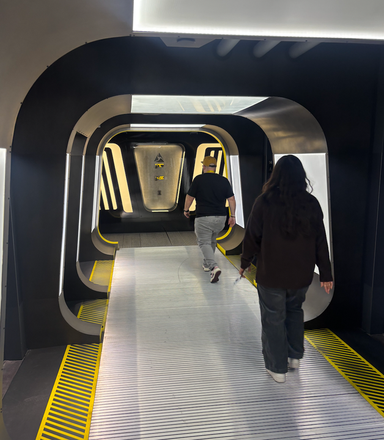
Where a lot of good design conversations happened.
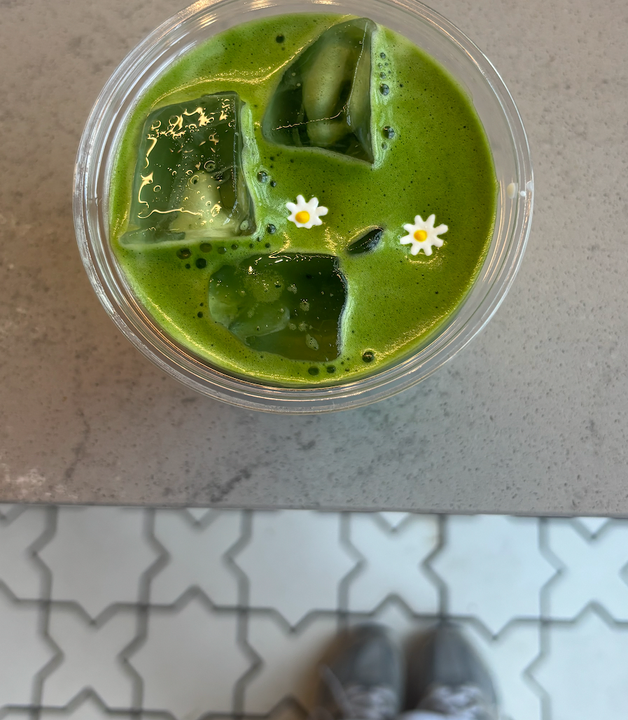
Design fuel.
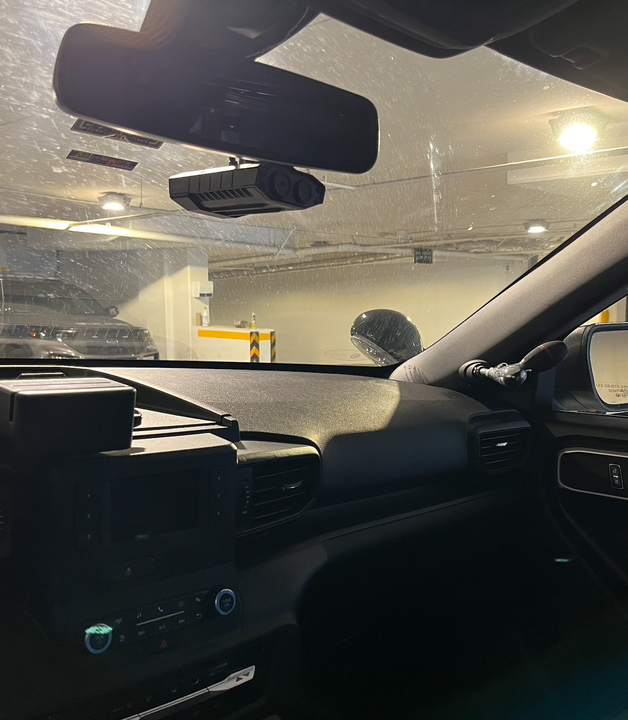
Seeing the product in action — beyond the screen.
Want to read more?
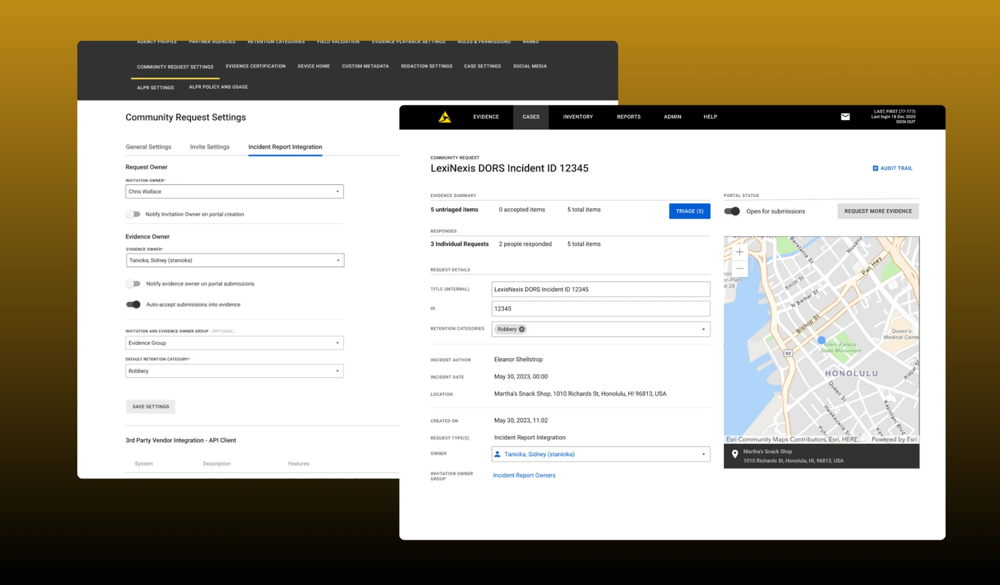
Unifying evidence so investigators can find what matters without leaving their workflow.
A redesign that replaced a manual, sales-focused buying process with a self-serve e-commerce experience built for discovery, engagement, and conversion.
As smart home adoption continues to grow across Canada, millions of consumers are entering the market for the first time—often feeling overwhelmed by choice, compatibility concerns, and installation uncertainty.
I led the design and front-end development of Shop Provincial, helping PSHS transition from a lead-based HVAC business to a scalable e-commerce platform through curated bundles, clear pricing, and integrated installation.
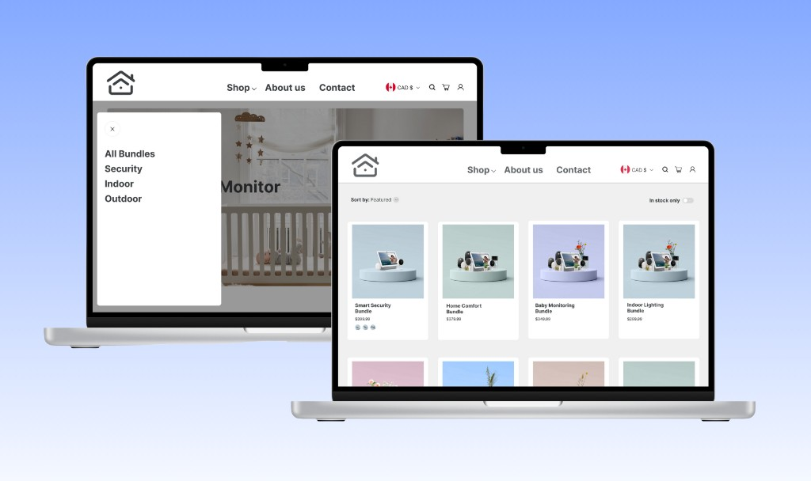
THE CHALLENGE
Shop Provincial’s parent company, PSHS, was shifting from a lead-based HVAC business to a scalable e-commerce model focused on smart home products. That meant building a new website from scratch—moving off WordPress—and creating an experience that would build customer trust and support a sustainable online business.
The question we tackled:
How might we help customers confidently buy smart home products online—without relying on manual, lead-based sales?
THE SOLUTION
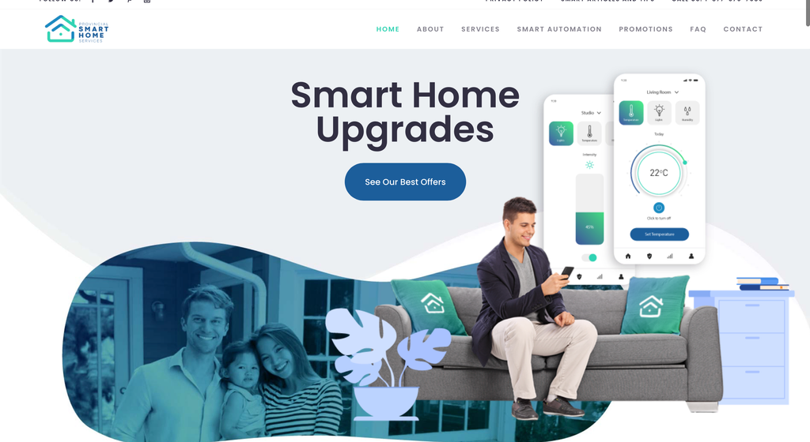
Initial homepage — lead-focused experience
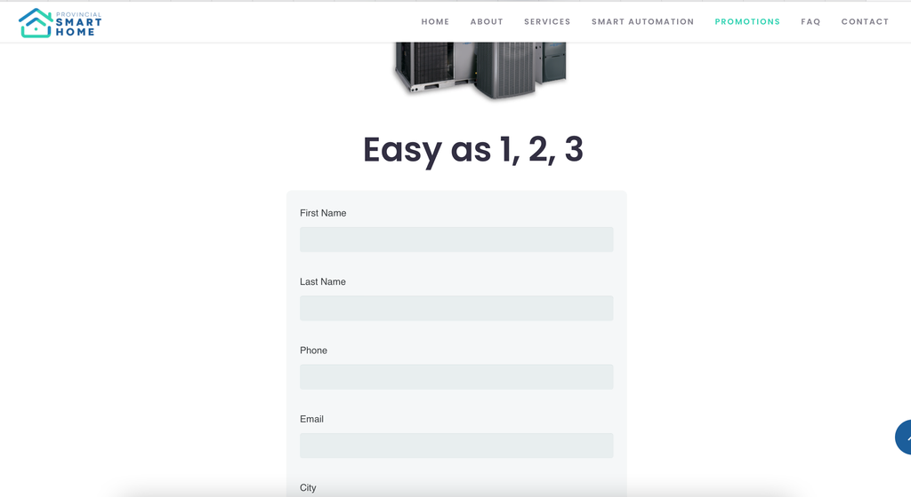
Lead capture form — manual follow-up
We designed a scalable e-commerce experience that replaces a manual, lead-based sales process with a clear and confident buying flow. By combining curated smart home bundles, transparent pricing, and professional installation into a single experience, customers can purchase without sales calls—while PSHS can scale beyond one-on-one interactions.
Pre-made smart home bundles reduce decision fatigue by offering compatible, ready-to-install solutions with clear pricing. This approach simplifies purchasing for first-time buyers while supporting efficient inventory and installation planning.
Installation services are integrated directly into the checkout flow, addressing a major trust barrier for customers who lack the time or technical expertise to install smart home systems themselves.
RESEARCH & DISCOVERY
Through surveys and interviews, we gained invaluable insights into the preferences and challenges faced by smart home consumers. Key findings revealed a strong preference for sustainability, seamless product compatibility, and reliable after-sales support. Interestingly, contrary to our initial assumptions, the most significant frustration among users was not the installation process but the updates and technical issues that arose afterwards. This insight has been crucial in guiding our strategy to enhance customer support and product offerings, ensuring we address the real pain points of our consumers.
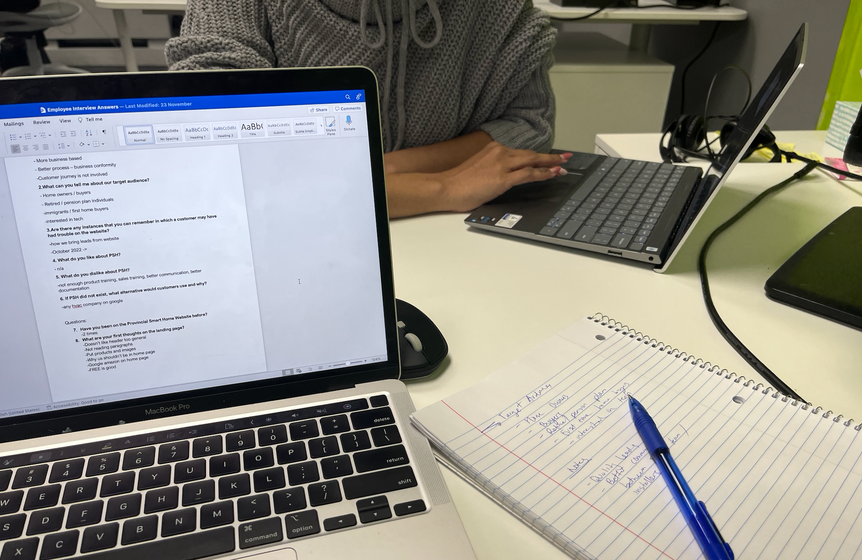
How do agencies collect evidence today?
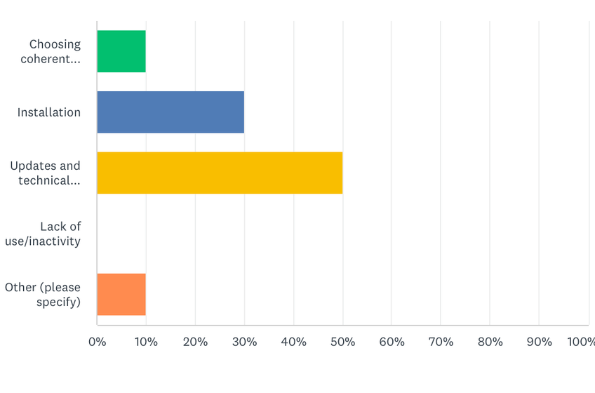
How do agencies collect evidence today?
Users desire curated bundles that combine quality and affordability, emphasizing the need for well-integrated, cost-effective solutions.
The lack of time or expertise for installation among users highlights the importance of offering convenient, same-day installation services.
A strong demand exists for continuous support and assistance post-installation, underscoring the value of maintenance subscriptions for consumer satisfaction.
DESIGN CONCEPTS FOR BUNDLES
After evaluating three bundle options for smart home products—personalized quizzes, build your bundle, and pre-made bundles—we concluded that pre-made bundles are the most effective. They simplify the buying process for customers by avoiding overwhelm and providing clear pricing, while on the business side they allow for easier stock management and streamlined installation. This strategy aligns with both consumer preferences for straightforward shopping and business objectives of efficient cross-selling and upselling.
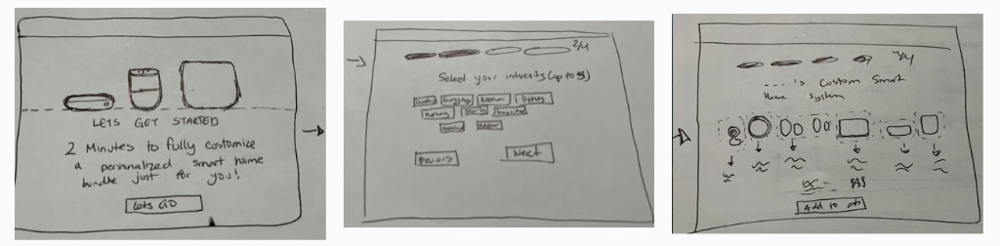
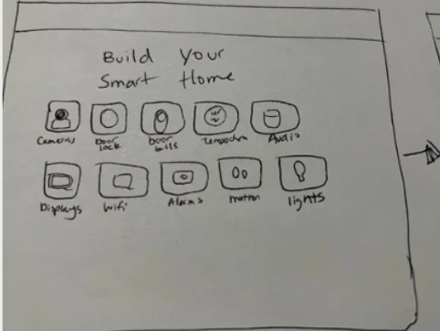
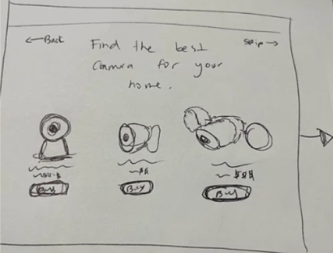
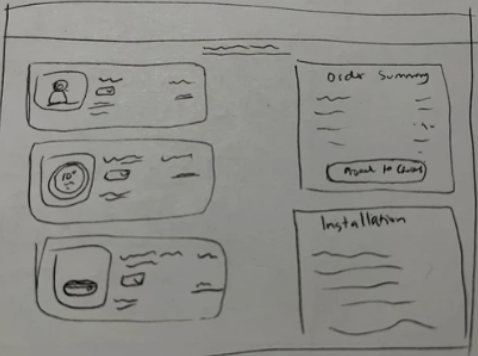
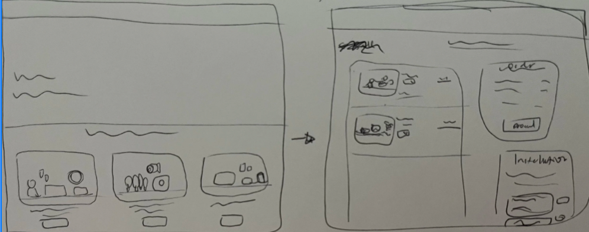
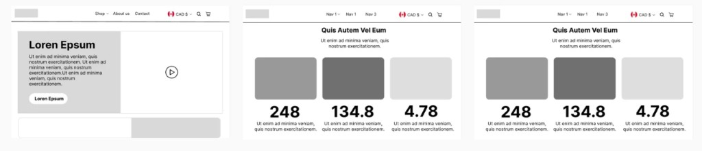
Feedback
Customers expressed hesitation around adding bundles during checkout and wanted more control over individual add-on selections. Bundled options felt restrictive, leading to lower engagement with additional products.
What changed
We tested surfacing individual add-on products alongside bundles within the checkout flow. A/B testing results showing 80% preference for individual items versus 30% for bundles led us to iterate toward a checkout experience that prioritizes cross-selling individual products, reducing reliance on bundle-based add-ons.
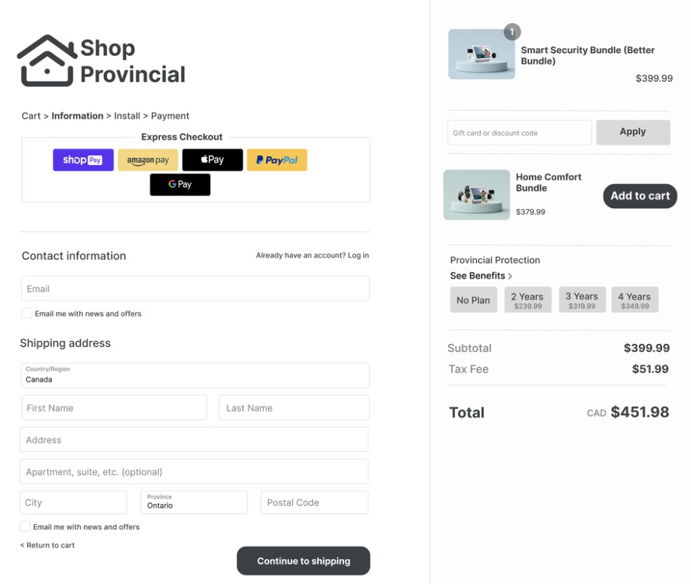
Checkout — bundle-focused add-ons
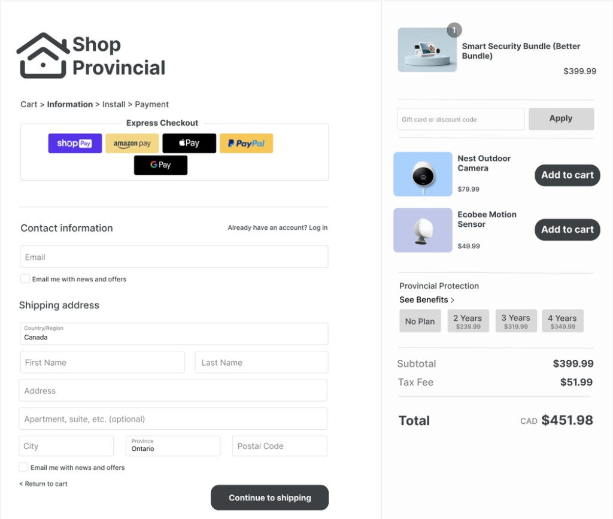
Checkout — individual add-ons
Feedback
Users reported that the homepage felt largely static and did not encourage exploration beyond initial scrolling. Key product information was easy to miss, resulting in shorter session times and limited interaction.
What changed
We introduced interactive components on the homepage, including sliders and hotspots, to encourage exploration and guide attention to key content. Post-launch analysis showed an increase in average time spent on the page by 1.5 minutes, indicating higher engagement and deeper content exploration.
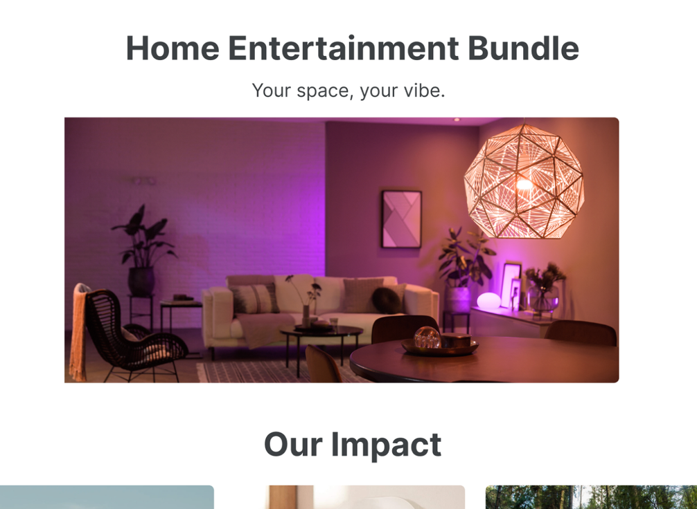
Homepage — static
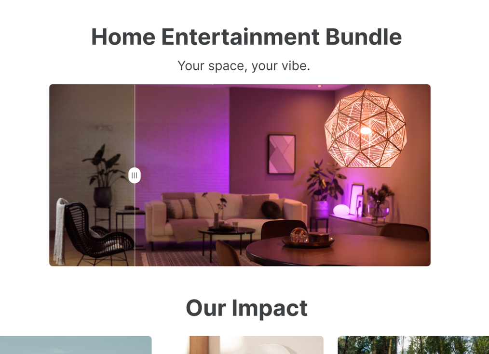
Homepage — with sliders and hotspots
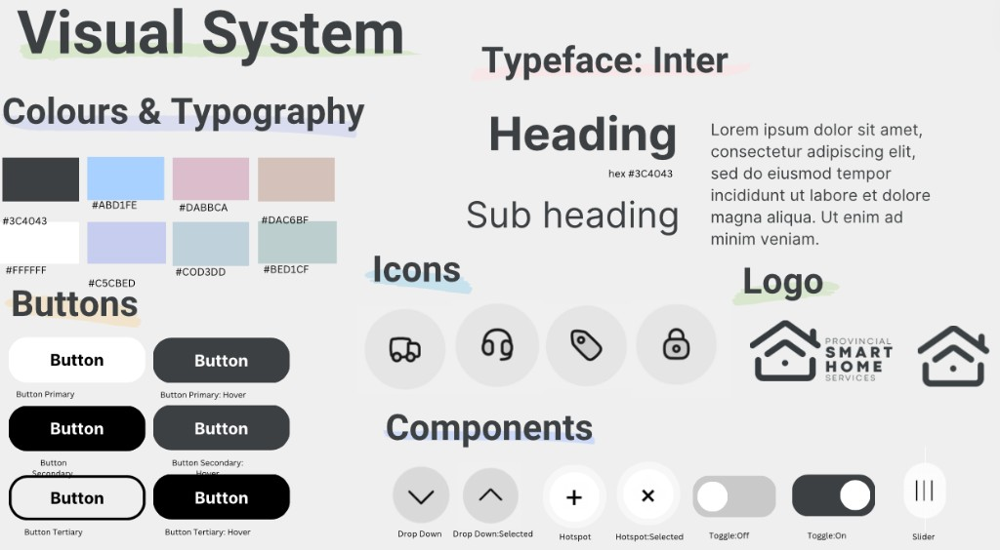
Balancing user experience with business objectives was central to this project. A user-centric approach helped prioritize what mattered most, and we focused on finalizing a mobile version to reach customers where they are. An AI personalization engine was explored but postponed due to budget constraints; we're looking forward to launch and subsequent data analysis to refine our UX strategy.
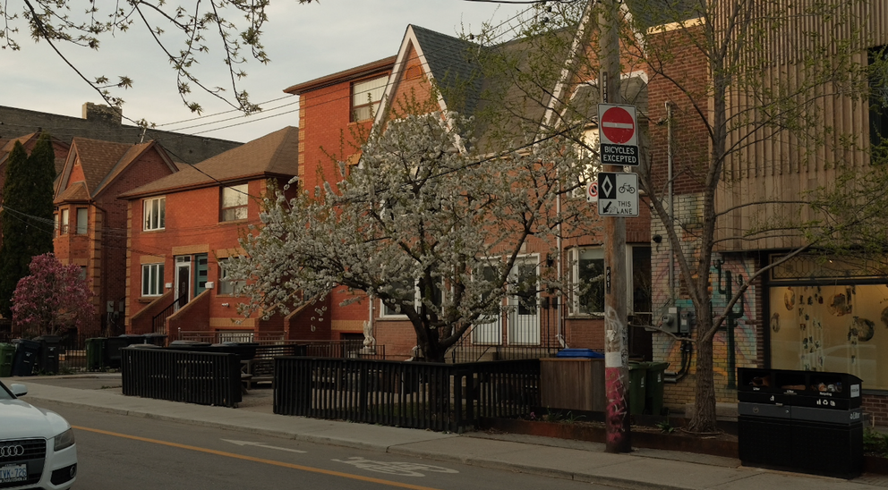
Dragging my Fuji everywhere, just in case.
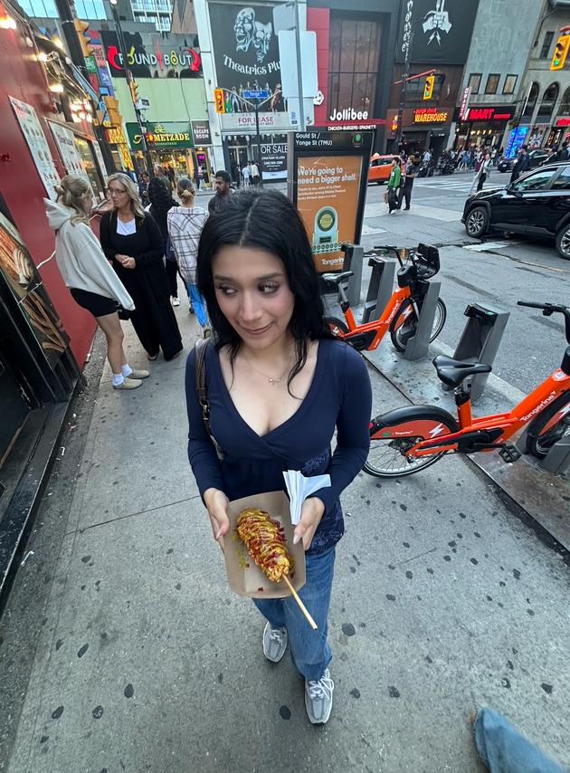
Research, but it's the Toronto food scene.
Want to read more?
Unifying evidence so investigators can find what matters without leaving their workflow.
Reimagining how incident reports and third-party evidence flow from the field into Evidence.com.